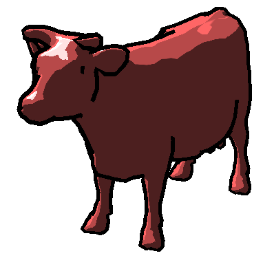
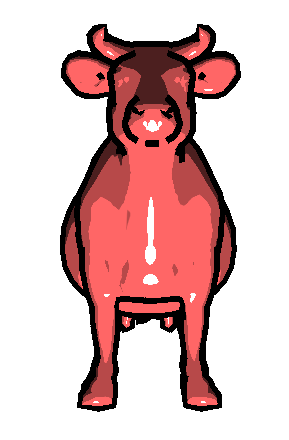

Toon Shader
Description
The goal of this assignment was to implement a Blinn-Phong shader to render the cow model that was given to us. On top of that, we were to use some texture lookups and make another shader for silhouetting to make it be "toon" shading, much like you see in games such as The Legend of Zelda WindWaker.
Code
Go to Github pageTools Used
- Modern OpenGL 3 for drawing and shading
- SDL2 for the windowing and user input
Features
- Blinn-Phong shader with the ambient, splecular, and diffuse lighting
- Toon shader via color ramping
- Silhouette shader
- Adjustable camera and light
Images:


